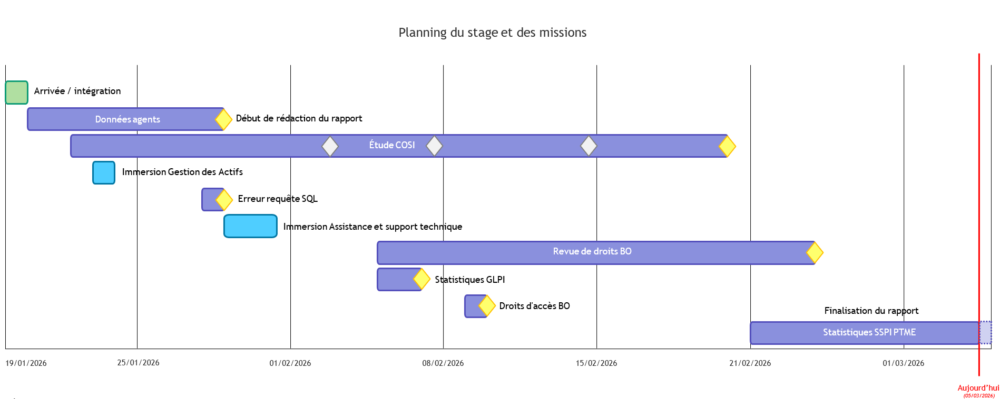

End-of-studies internship, BUT Informatique (3rd year)
period
13 to 16 weeks, between March 15 and July 2, 2027
location
Dijon / Pontarlier, France
fields
Application development (web, software) · Data / Business Intelligence · IT support
driving licence
Category B driving licence, no vehicle
02
Experience
Dijon, France
Business Intelligence Intern
CHU Dijon Bourgogne (University Hospital)
Gathered user requirements.
Analysed hospital data (Big Data) with SQL.
Delivered reports to support decision-making.
Built dashboards with SAP BusinessObjects.
Handled day-to-day user requests.
Supported and trained users on the reporting tools.
Managed access rights and took part in application permission reviews.
Internship
Data
Healthcare
SAP BusinessObjects
Business Intelligence
Requirements gathering
Doubs, France
Sales Advisor
L'Entrepôt du Bricolage (DIY retail)
Plumbing, tiling, lighting and paint departments.
Welcomed customers and identified their technical needs.
Gave tailored advice and pointed customers to the right solutions.
Managed stock and department logistics.
Built strong interpersonal skills.
Learned on the job every day, independently.
Seasonal
Sales advisor
Requirements gathering
Versatility
Autonomy
Interpersonal skills
03
Projects
Hover over or click a project image to see its screenshots.
Since Sept. 2026
Antre2Verres (client/server)
After winning the call for tenders, our team is building a client/server web platform in 3 sprints to
digitally transform a bar-restaurant in Dijon.
Client
Development
Server
API
ASP.NET
Angular
MariaDB
Scrum
Semester 4 · 2026
Web application audit and optimisation
Full audit and optimisation of an institutional application (SOFTS) for the IUT's computer science
department: software quality, infrastructure security and eco-design.
Audit
Optimisation
Quality
Security
Accessibility
TypeScript
PHP
Semester 3 · 2025
DE-BUT
Client/server application for future computer science students: quizzes, exercises and interactive
lessons, with student and teacher accounts. UML, PHP/HTML/CSS on the client side, SQL database, GitHub
and accessibility standards.
Retro 2D game in C#, built as a team from a framework and a detailed specification: UML design,
object-oriented programming, GitHub, unit tests and internationalisation.
Static website designed and built on my own to present my background beyond a resume. Continuously
improved: accessibility, responsive design, English version.
CHU Dijon Bourgogne (University Hospital) · Digital Services Department · Jan. 19 → Mar. 20, 2026
Second-year internship in the hospital's BI team, driven by one question:
how do you turn raw hospital data into reliable indicators that help departments make decisions?
9weeks of internship
5missions carried out
27departments audited
~40unjustified access rights revoked
Context
The Dijon Bourgogne University Hospital is the region's largest employer (around 9,000 staff). Its Digital Services
Department has over 90 people. I joined the Business Intelligence team, which turns data from hospital software into
decision-support reports.
Requests come in as GLPI tickets from departments (doctors, managers, HR…). My job: understand the real business need
behind each request, then translate it into reliable queries and reports.
Missions
COSI study: the main project
A psychiatry resident needed the results of 11 lab tests for a cohort of patients, within a window of 5 days before to
5 days after their admission.
First attempt with SAP BusinessObjects, which could not reach the required level of detail.
Switched to direct SQL on Oracle (with DBeaver): ROW_NUMBER() OVER (PARTITION BY …) to keep only the first result per patient, CASE WHEN to pivot test rows into columns.
Dedicated query for CRP, stored as CLOB with some text values (“<0.4”).
Unit normalisation (mmol/L or g/L depending on labels) and loading into the resident's Excel file, following an ETL approach.
Delivered and approved by the user.
“Staff data” report
BusinessObjects report listing all staff present in 2025 (ID, RPPS number, working time, assignment…), used to update the
hospital's research directories. It required joining two different BO universes. Delivered and approved.
Recovery room activity (SSPI PTME)
Indicators comparing 2024 and 2025 (occupancy rate, average surgery duration) for an understaffed department that needed
facts to support its workload. I handled the request from requirements gathering to the first visualisations.
BusinessObjects access review
Annual audit of BO folder access for the hospital's 27 departments: inventory, sending to referents, follow-ups and a
tracking file. Result: around forty unjustified access rights revoked. I also spotted a flaw in the GLPI access request form
(a group pre-selected by default), which was then fixed.
User support
Failing query: the table was named ORDER, a reserved SQL word. Fixed with double quotes.
Helped a user with the BO interface (features hidden when opened from favourites).
GLPI ticket statistics for the imaging department.

Mission schedule over the internship.
Tools
SAP BusinessObjects
SQL (Oracle)
DBeaver
GLPI
Excel
Microsoft Teams
Takeaways
Degree skills put into practice: managing data and developing applications.
On a personal level: a first real work experience, autonomy, teamwork and a lot of communication with non-technical users.
The main challenge was the complexity of the hospital information system, with many tools and a medical vocabulary to learn
in order to bridge the gap between medical and technical language.
Health data being confidential, no report or query screenshot is shown here.
Antre2Verres (client/server)
Since Sept. 2026 · team project · 3 Scrum sprints
After winning the call for tenders, our team is building a client/server web platform to digitally transform a bar-restaurant in Dijon.
My role
To fill in: what I built myself, the features I was responsible for…
Challenges and lessons
To fill in: a technical problem I faced and how I solved it, what I learned…
Outcome
Call for tenders won. Project in progress.
Screenshots: click the image on the project card.
Web application audit and optimisation
Semester 4 · 2026 · team project
Full audit and optimisation of an institutional application (SOFTS) for the IUT's computer science department: software quality, infrastructure security and eco-design.
My role
To fill in: what I built myself, the features I was responsible for…
Challenges and lessons
To fill in: a technical problem I faced and how I solved it, what I learned…
Outcome
To fill in: grade, delivery, feedback from the client or teachers…
Screenshots: click the image on the project card.
DE-BUT
Semester 3 · 2025 · team project
Client/server application for future computer science students: quizzes, exercises and interactive lessons, with student and teacher accounts.
My role
To fill in: what I built myself, the features I was responsible for…
Challenges and lessons
To fill in: a technical problem I faced and how I solved it, what I learned…
Outcome
To fill in: grade, delivery, feedback from the client or teachers…
Retro 2D game in C#, built from a framework and a detailed specification: UML design, object-oriented programming, unit tests and internationalisation.
My role
To fill in: what I built myself, the features I was responsible for…
Challenges and lessons
To fill in: a technical problem I faced and how I solved it, what I learned…
Outcome
To fill in: grade, delivery, feedback from the client or teachers…